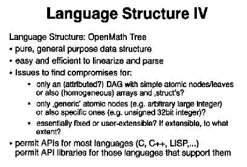

A. Strotmann: Overview of the OpenMath language structure
Slides presented at OpenMath Workshop 3 by Andreas Strotmann.
(full size, 5k)
(original, 13k)
(full size, 9k)
(original, 22k)
(full size, 8k)
(original, 18k)
(full size, 9k)
(original, 20k)
(full size, 11k)
(original, 24k)
(full size, 6k)
(original, 15k)
(full size, 5k)
(original, 14k)
(full size, 11k)
(original, 24k)
(full size, 9k)
(original, 19k)
(full size, 8k)
(original, 18k)

(full size, 11k)
(original, 26k)
(full size, 3k)
(original, 11k)
(full size, 11k)
(original, 25k)
(full size, 12k)
(original, 26k)
(full size, 10k)
(original, 21k)
(full size, 8k)
(original, 19k)
(full size, 7k)
(original, 18k)
(full size, 6k)
(original, 15k)
(full size, 13k)
(original, 29k)
This page is part of the OpenMath Web archive,
and is no longer kept up to date.